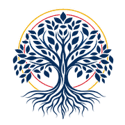
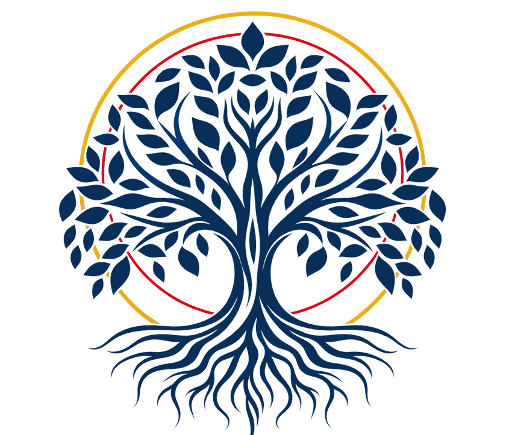

चिंगारी
एक अनोखी, सुंदर या ज़रूरी दृष्टि को बढ़ने की जगह मिलती है।
चिंगारियों को जलते देखो →
HASTA LA VISTAसुंदरता कोई विलासिता नहीं होनी चाहिए। साहसी विचार, मानवीय बुद्धि, AI एजेंट और साझा मेहनत — मिलकर ऐसी सुंदर चीज़ें बनाने के लिए जो सबका जीवन बेहतर करें।
आइए, स्पेन को उससे भी ज़्यादा सुंदर बनाएँ जितना वह पहले से है।

“थोड़े से पागलपन के बिनासाहस भी सुंदरता का एक रूप है
कोई प्रतिभा नहीं होती।”
“सिर्फ़ इसलिए अपने सपने को छोटा मत करो कि तुम कम साधनों से शुरू कर रहे हो।”तुम्हारी बुद्धि और तुम्हारा साहस भी संसाधन हैं
प्रोजेक्ट के सिद्धांत: रचना, सहयोग, कल्पना, निर्माण, साझा करना।
हमारे लिए सुंदरता हर चीज़ के केंद्र में है: जो हम कल्पना करते हैं उसमें, जिस तरह हम मिलकर काम करते हैं उसमें, और जो हम दुनिया के लिए छोड़ जाते हैं उसमें। क्या हो अगर तुम एक विचार, एक हुनर, कुछ घंटों की मेहनत, एक गीत, एक मशीन या एक AI एजेंट भी दे सको? Hasta La Vista योगदान के इन सभी तरीकों को जोड़ना चाहता है, ताकि असाधारण प्रोजेक्ट इच्छा से हक़ीक़त तक पहुँचें।
एक पहला नक्शा
हर उस व्यक्ति के लिए खुला जो जुड़ना चाहे
एक अनोखी, सुंदर या ज़रूरी दृष्टि को बढ़ने की जगह मिलती है।
चिंगारियों को जलते देखो →समय, हुनर, ज्ञान, पैसा, कला या कोई AI टूल।
हमें बताओ तुम क्या देना चाहोगे →लोग और तकनीक मिलकर काम करते हैं; फ़ैसले इंसानों के ही रहते हैं।
वह प्रोजेक्ट खोजो जो तुम्हें पुकारे →जो मूल्य बनता है, वह उन्हीं के पास लौटता है जिन्होंने उसे संभव बनाया, और उस दुनिया के पास जिसे उसकी ज़रूरत है।
Hasta La Vista पर एक प्रोजेक्ट कुछ ऐसा दिख सकता है। हर कोई वह लाता है जो उसके पास है: एक विचार, कुछ घंटे, एक हुनर, एक AI टूल या पैसा। हर योगदान मायने रखता है, और हर योगदान दिखाई देता है।
उदाहरण के लिए: प्रोजेक्ट और आँकड़े काल्पनिक हैं।
पड़ोसियों के साथ मिलकर बनाया और रंगा गया एक सामूहिक भित्तिचित्र, ताकि चौक फिर से मिलने-जुलने की जगह बन जाए।
पैसा पाँच पट्टियों में से सिर्फ़ एक है।
मैं मदद करना चाहूँगा/चाहूँगीहम चाहते हैं कि महत्वाकांक्षी विचारों को उनके लोग, उनके साधन और उनका समय मिले। हम एक सवाल से शुरू करते हैं: हम मिलकर क्या रच सकते हैं जिससे स्पेन — और पूरी दुनिया — थोड़ी और सुंदर बने?
और यह मंच भी इसी ऊर्जा से बढ़ेगा: समुदाय सुधार सुझा सकेगा, और एक देखभाल करने वाली टीम उन्हें चुनेगी, उनका श्रेय देगी और प्रोजेक्ट की सुंदरता और एकरूपता की रक्षा करेगी।
“थोड़े से पागलपन के बिना कोई प्रतिभा नहीं होती।”साहस करने का एक निमंत्रण
सब कुछ दिखता है। AI एक शीशे की खिड़की के पीछे काम करता है: हर काम, उसके कारण के साथ।
यहाँ हर कोई बिना डर के साहस कर सकता है। AI सुझाव देता है; फ़ैसले लोग करते हैं।
हर संसाधन अपनी सही जगह पर, जैसे ठीक से लगाई गई कील। पैसा सबसे आख़िर में।
जहाँ तक संभव हो, सबके लिए खुला: पैसे, भाषा या क्षमता की कोई दीवार नहीं।
AI के साथ कुछ ही मिनटों में, Hasta La Vista आधी दुनिया की भाषा बोलने लगा।
8 भाषाएँ · AI का एक उपहार। Ritukah का एक उपहार।
“हाथों के बिना विचार सपना ही रहता है।
विचार के बिना हाथ बस मशीन रहते हैं।
साथ मिलकर, वे तारे जलाते हैं।”
“देना सुंदर है। लेना भी।
यहाँ कोई अपने हाथ नहीं छिपाता: न देने वाले, न खुलने वाले।”
यह विचार मेरे अपने दुख और एक भारी ऊब से जन्मा। एक विचार, अपनी ऊर्जा और ChatGPT की €10 की सदस्यता के साथ मैंने इसे बनाना शुरू किया। मेरा सपना है कि Hasta La Vista पूरी दुनिया तक पहुँचे और एक सुंदर पहचान बनाए: उस सुंदरता के लिए जो यह रचता है, और उस सम्मान के लिए जिसके हक़दार वे लोग हैं जो इसे संभव बनाते हैं।
I wish the World for the planet Earth.
World means the fucking universe.
And you can say fucking in my company. No problemos.
हम अभी इस विचार को आकार दे रहे हैं। यह प्रोटोटाइप अभी कोई डेटा नहीं भेजता: यह कल्पना करने का एक तरीका है कि यहाँ कौन मिल सकता है।
— Ritukah & Claudie